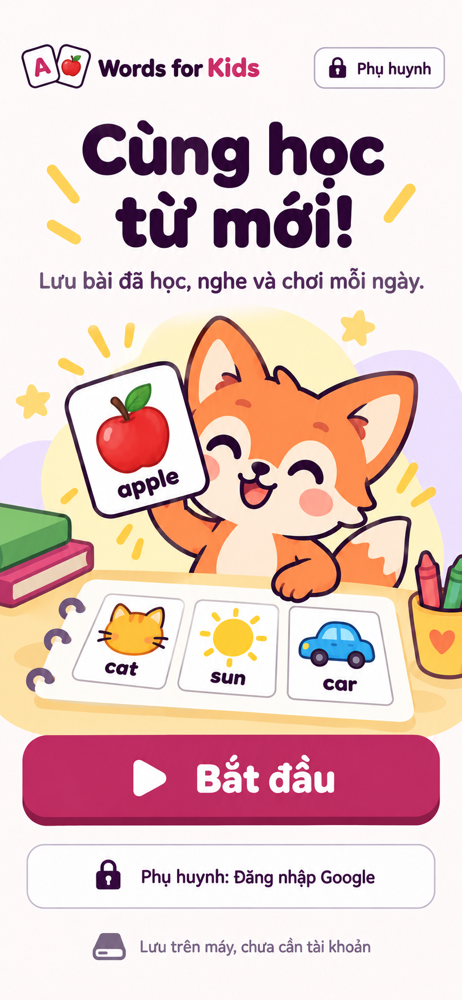S01 · Học & chơiChào và bắt đầuLần đầu, Bắt đầu trên máy là nút chínhGraph 4.1 trong plan
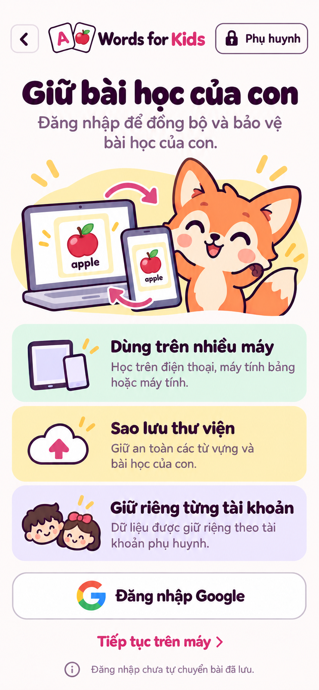S02 · Phụ huynhĐăng nhập GoogleGiải thích lợi ích cloud, Google và tiếp tục trên máyGraph 4.2 trong plan
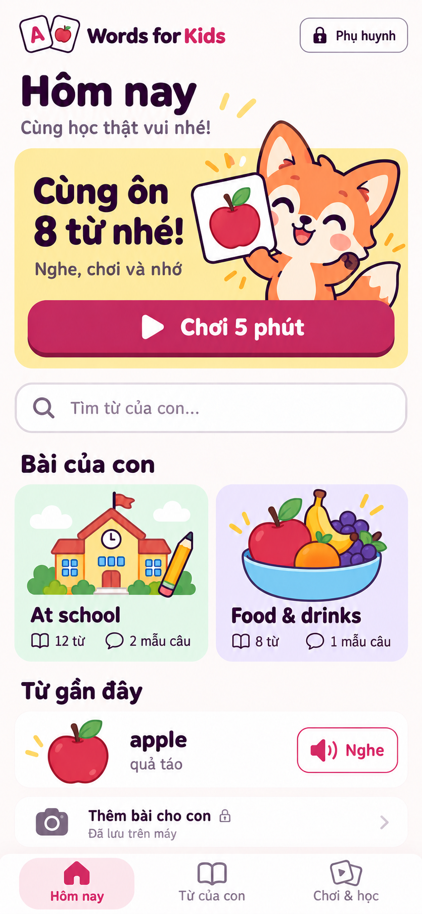S03 · Học & chơiHôm nayCó dữ liệu, 8 từ cần ôn; At school và Food & drinks là bài cũGraph 4.3 trong plan
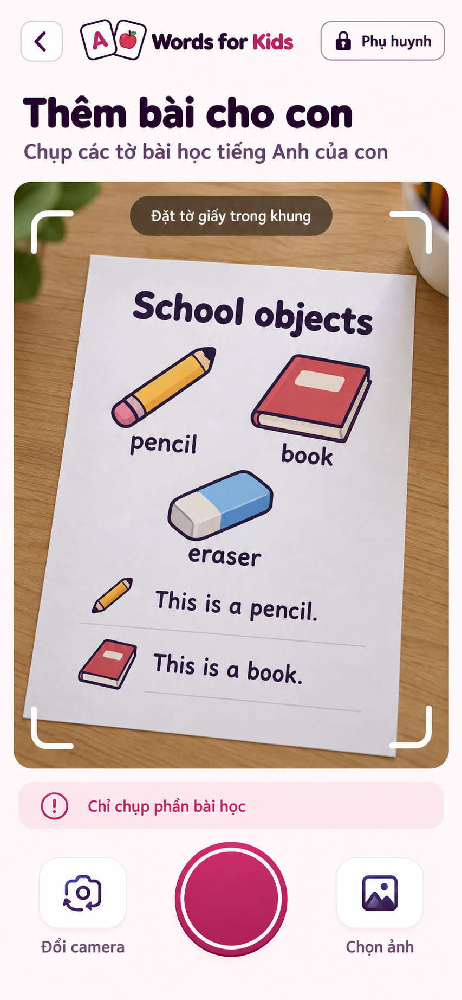S04 · Phụ huynhCamera hoặc tải ảnhCamera đã được cho phép, tờ A4 trong khung; có chọn ảnh thay thếGraph 4.4 trong plan
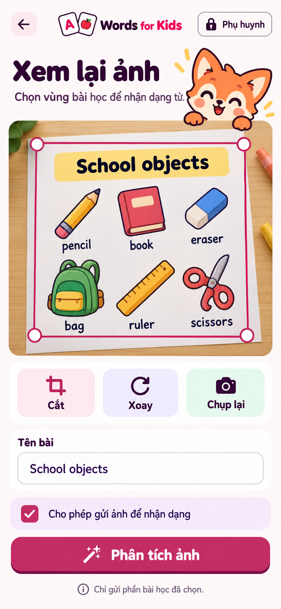S05 · Phụ huynhXem và chỉnh ảnhẢnh School objects rõ, crop/xoay và consent phân tíchGraph 4.5 trong plan
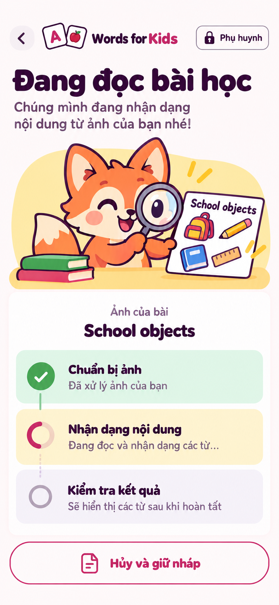S06 · Phụ huynhĐang phân tíchBước thật đang nhận dạng, có Hủy; không phần trăm giảGraph 4.6 trong plan
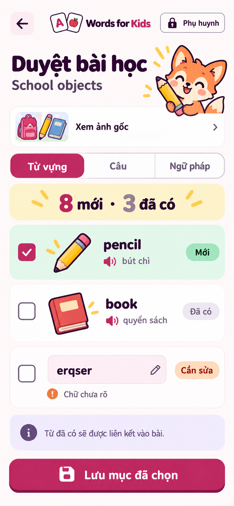S07 · Phụ huynhDuyệt nội dungSchool objects: pencil mới, book đã có, erqser cần sửaGraph 4.7 trong plan
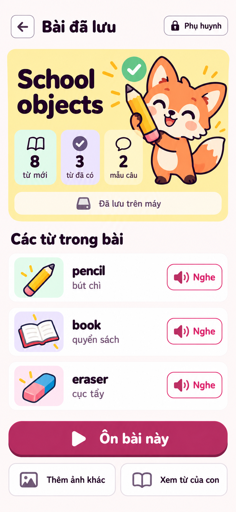S08 · Học & chơiBài vừa lưuSchool objects: 8 từ mới, 3 đã có, 2 mẫu câuGraph 4.8 trong plan
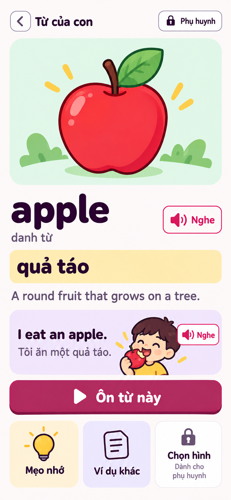S09 · Học & chơiTừ của conChi tiết apple, nghĩa EN–VI/EN–EN, ví dụ và NgheGraph 4.9 trong plan
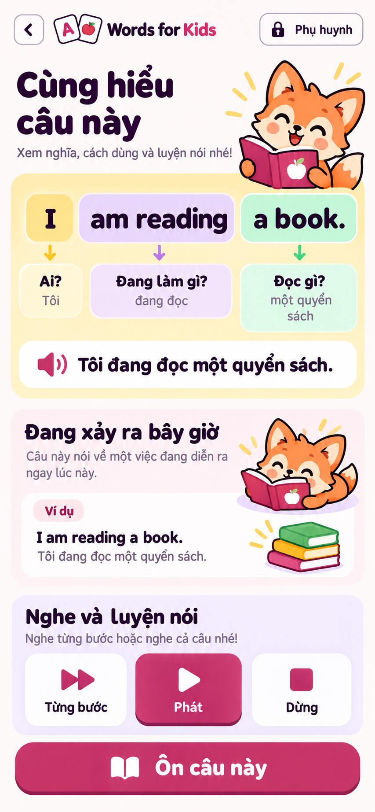S10 · Học & chơiCâu và ngữ phápI / am reading / a book. với giải thích từng cụmGraph 4.10 trong plan
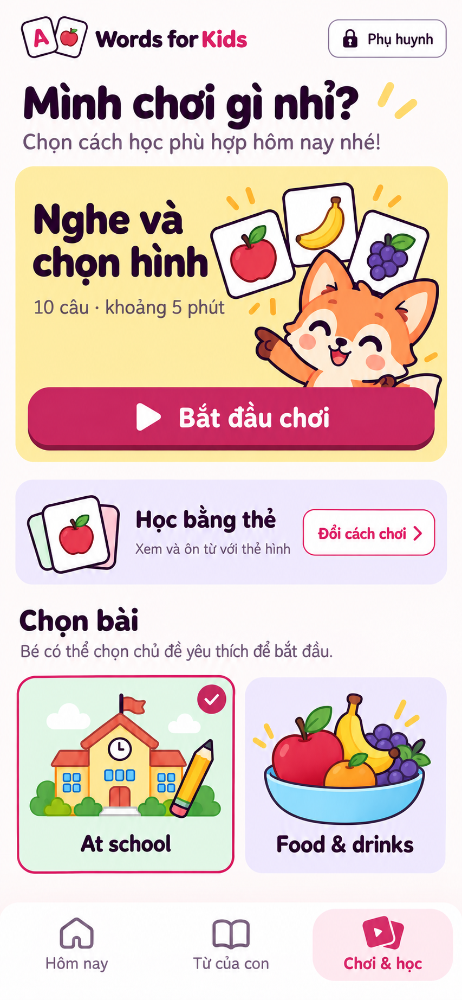S11 · Học & chơiChọn buổi họcPhiên ôn đến hạn được gợi ý, Đổi cách học là phụGraph 4.11 trong plan
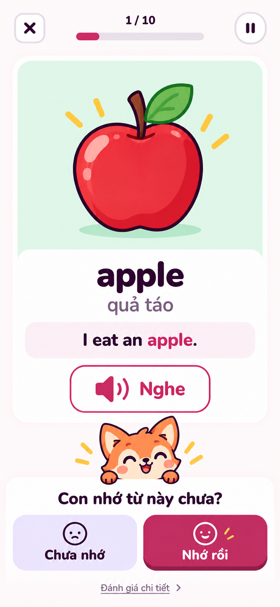S12 · Học & chơiFlashcardApple đã hiện đáp án, nghĩa và ví dụ; hai nút Chưa nhớ/Nhớ rồi của chế độ đơn giảnGraph 4.12 trong plan
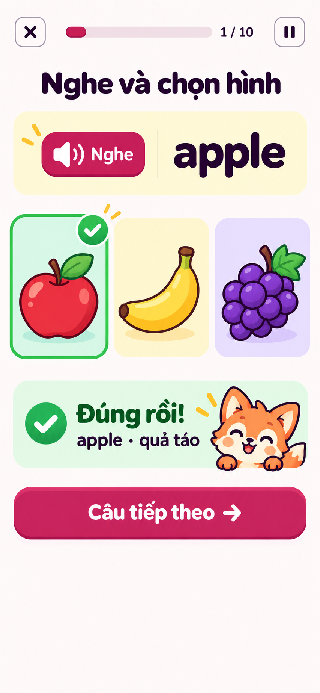S13 · Học & chơiMinigameG02: apple đã chọn đúng; ba hình ngang nhau cùng hàng; feedback và CTA tiếp tụcGraph 4.13 trong plan
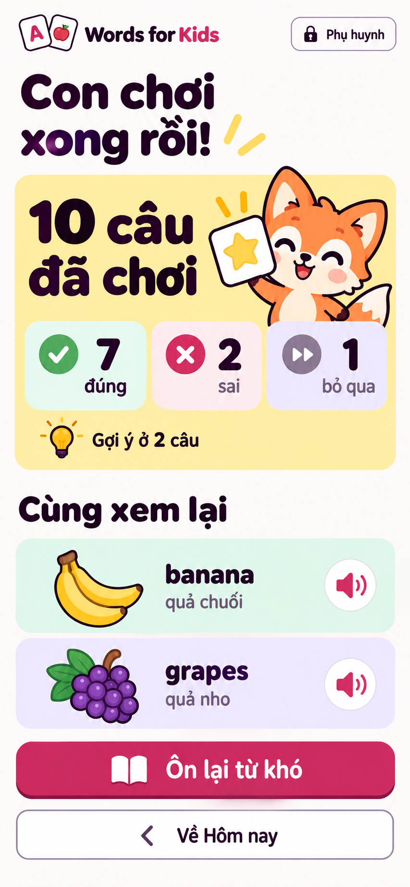S14 · Học & chơiKết quả buổi họcGame 10 câu: 7 đúng, 2 sai, 1 bỏ qua; gợi ý ở 2 câuGraph 4.14 trong plan
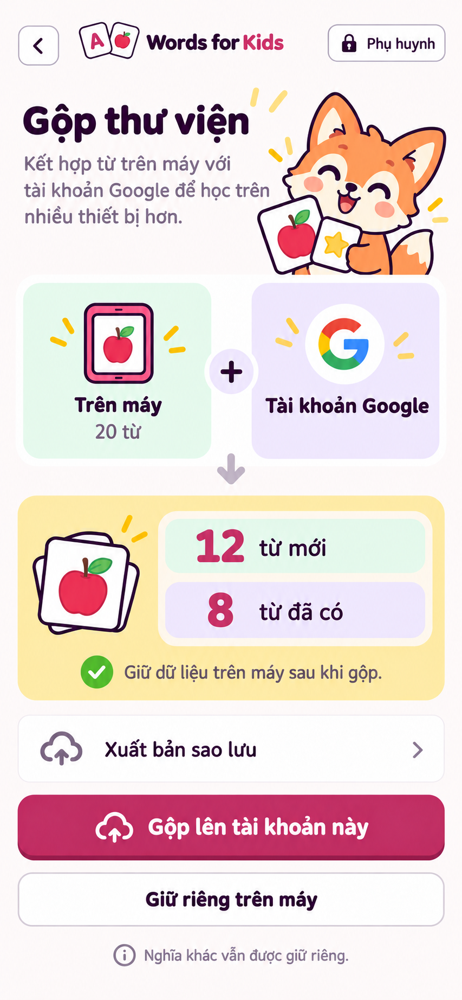S15 · Phụ huynhĐồng bộ thư việnPreview 20 từ khách: 12 mới, 8 đã có; chưa gộpGraph 4.15 trong plan
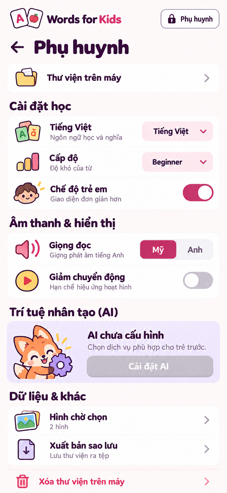S16 · Phụ huynhCài đặt và sao lưuKhu phụ huynh, VI/Beginner/child-friendly on, nguồn local; provider chưa chọn, không có key thậtGraph 4.16 trong plan